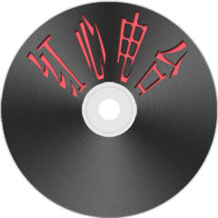

Red Heart/红心电台 是一个可以存储播放列表的在线播放器
左侧列表可添加歌曲
未添加歌曲时显示默认歌曲，添加歌曲后显示用户添加歌曲
支持快捷键操作: Space(播放/暂停)、Left(上一首)、Right(下一首)、F(添加歌曲到列表)、D(从列表中移除歌曲)
推荐使用 Chrome/Firefox 进行浏览
有什么问题可以发邮件至 i@imnerd.org
注: 背景图由卜卜口拍摄提供，部分为怡红公子拍摄